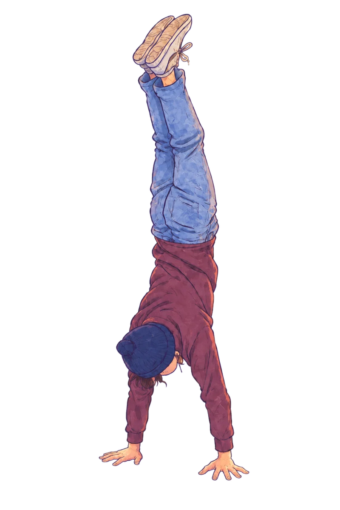
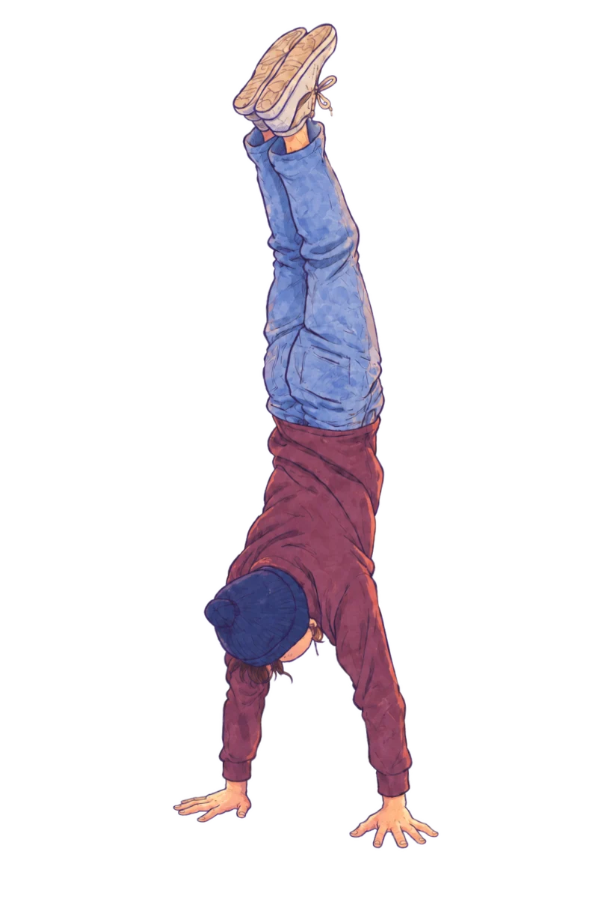
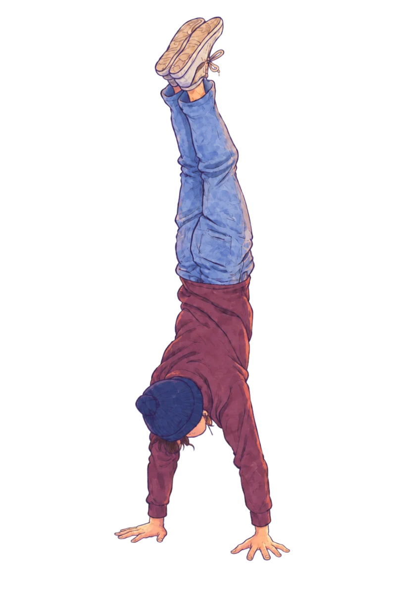
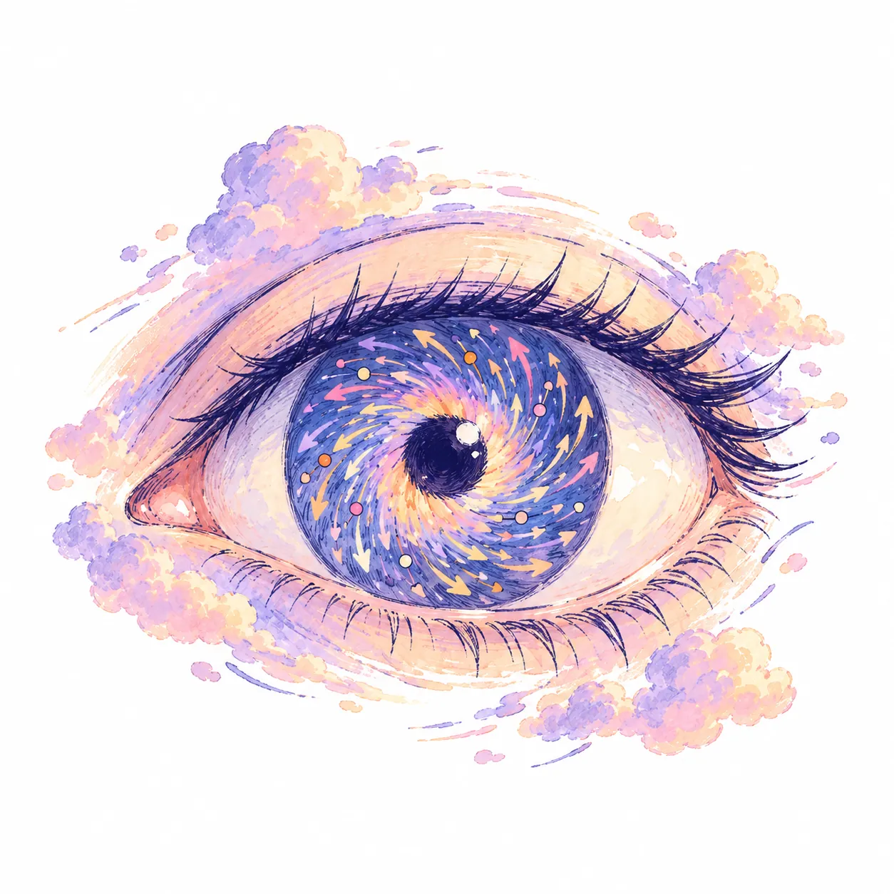
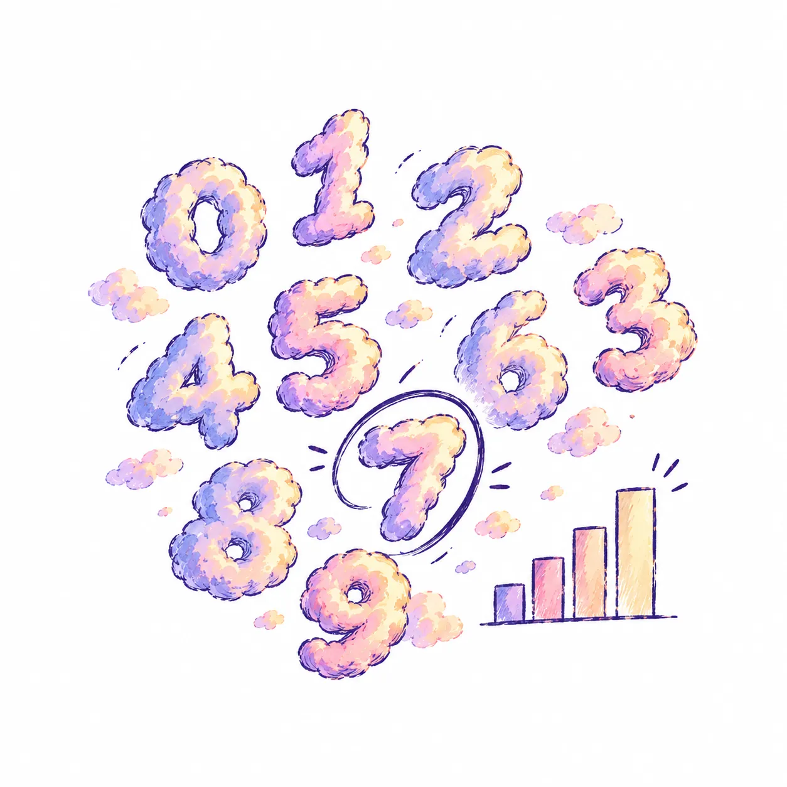
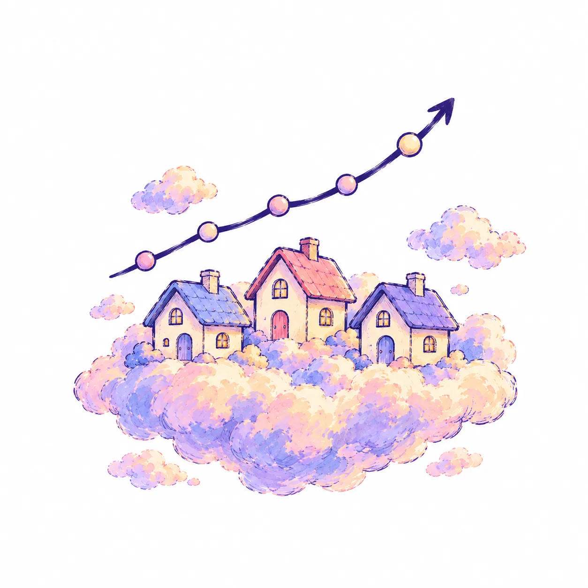
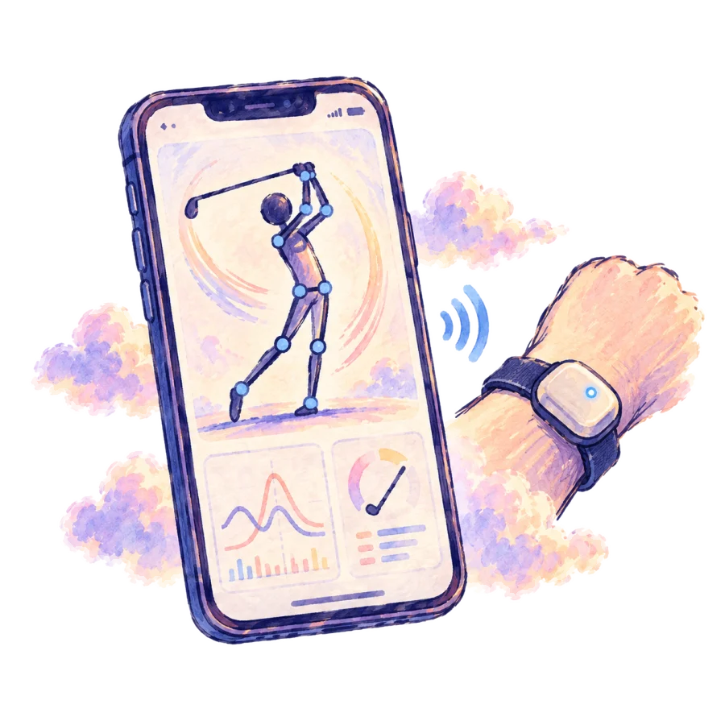

scroll to sink into the clouds
Selected work
things I built, drawn the way I see them
Golf Swing Analyzer
Real-time swing analysis from wearable sensors. This is my own swing, run through MediaPipe pose: joint angles, hand path, tempo.

Optical Flow Tracker
30+ FPS Lucas–Kanade tracking with Shi–Tomasi corners and dense flow.
github ↗
Digit Classifier
A Keras CNN at 98% on MNIST. Soon: draw a digit here and watch it guess.
github ↗
Real Estate Predictor
Four models compared; 7% lower RMSE with tuning and log-price targets.
github ↗Experience
where the craft came from
Video Editor
3D compositing, camera tracking and thumbnails in After Effects and Premiere, leading up to four editors. COD edits are where I learned that the viewer only sees the cut.

2024 – 2025Backend Developer · Extropian
Flutter golf-swing app; led the Bluetooth streaming and metric layer.
Systems Assembler & IT
Gaming, editing and server builds; small-business networks with VMs.
Lockout Technician
Push-to-start key programming and fast on-site problem solving.
About me
I'm a full-stack engineer focused on machine learning and data science, but what I really enjoy is solving problems — with tools I've picked up or ones built from scratch.
Years of video editing taught me that what the viewer sees matters as much as what's behind it.